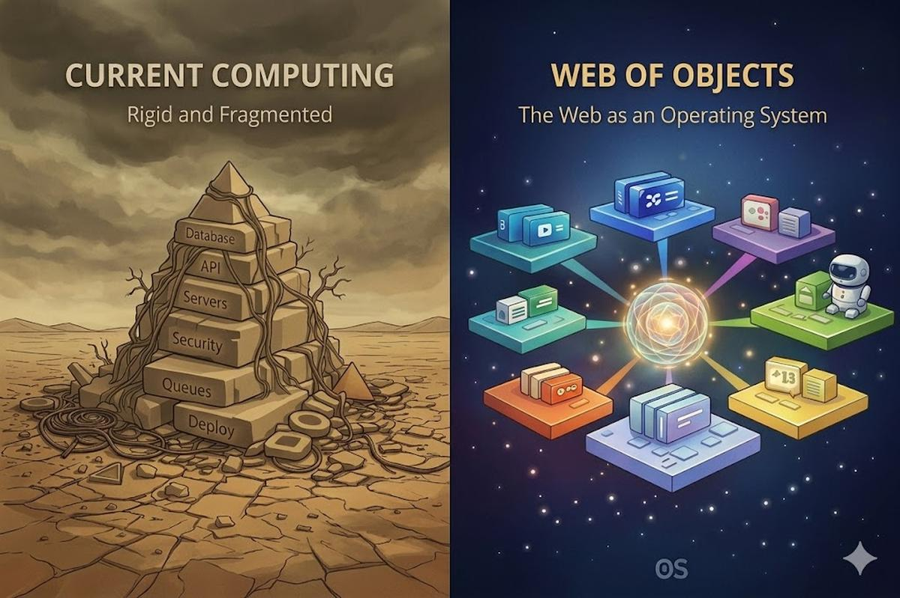

🧱 The software development stack is broken. Building an app is complex and time-consuming, requiring endless infrastructure: databases, APIs, authentication, servers, caching, queues, monitoring, scaling, security, and deployment. Most of this work has nothing to do with the product — it’s just plumbing. Notion exposed the problem. Vibe coding confirms it. People don’t want to build infrastructure. They just want to build tools fast.
🔒 But this isn’t just a developer problem. It reveals a deeper flaw in modern computing: its rigidity. Every application invents its own way of representing data, then traps that data inside closed ecosystems users don’t control — proprietary files, isolated databases, or cloud systems scattered across continents that even the developers themselves don’t own. As a result, information becomes fragmented, structures lock into place and stop evolving, and our ideas can’t truly connect. Instead of shaping our tools, we’re forced to adapt to them.
🧩 This is exactly why there is no perfect productivity tool. Every app is built on top of this fragmented and rigid foundation, forcing early, irreversible tradeoffs: how data is structured, how workflows behave, what can be customized, and what remains fixed. These constraints prevent tools from truly adapting to how people think or evolving alongside changing needs. Instead of living systems, we get static products — each solving a narrow slice of productivity while introducing new limitations elsewhere. The problem isn’t just poor design; it’s that the underlying architecture makes true flexibility, interoperability, and user ownership fundamentally out of reach.
🌐 That’s why we’re inventing and building a new kind of web — a high-level operating system for humans and AI agents. We call it the Web of Objects.
🕸️ Web of Objects is a new computing layer that absorbs the software stack by making infrastructure a built-in property of the web itself. It goes beyond files and folders, beyond links and pages, and beyond isolated apps to create a living network of interconnected objects that mirrors how humans think and work.
♾️ It provides a universal way to represent and connect information — structured or unstructured, personal or collective — within a single coherent environment.
🛡️ Across Europe, organizations, including those in Germany, France, Denmark, the Netherlands, and Sweden, are moving away from Microsoft 365 to regain control of their data, improve regulatory compliance, and reduce vendor lock-in. This reflects a broader push for digital sovereignty and long-term independence. Web of Objects is designed for privacy and control, giving individuals and organizations full sovereignty over their data. Data can live on their own servers or with any cloud provider — and move freely between providers at any time, as easily as moving a file between folders.
🤖 This architecture also unlocks unified agentic AI systems. Large language models can follow schemas and use tool protocols — but they still lack a shared, semantically rich environment to operate in. Most information lives in fragmented apps, files, and databases where meaning, relationships, permissions, and behavior remain implicit. Web of Objects changes this by making structure native: information exists as interconnected objects with identity, metadata, links, and rules built in.
🪐 On top of Web of Objects emerges a new space on the Internet: the webverse, where web pages become objects, websites become worlds, and the World Wide Web becomes a universe.
⚠️ But technology alone isn’t enough. The AI revolution shows that innovation can advance humanity while also displacing people — not because technology is harmful, but because profit-driven systems use it to cut costs instead of lifting everyone.
🌍 We need a new way to think about the future. A web society that unites people across borders and cultures, where technology serves humanity and business is shaped for shared progress — not just profit.
🫶 Join our rebellion. Because when humanity unites, the status quo doesn’t stand a chance.